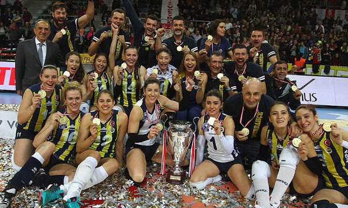

It has been a part of the official program of the Summer Olympic Games since Tokyo 1964. The complete set of rules is extensive, but play essentially proceeds as follows: a player on one of the teams begins a 'rally' by serving the ball (tossing or releasing it and then hitting it with a hand or arm), from behind the back boundary line of the court, over the net, and into the receiving team's court. The receiving team must not let the ball be grounded within their court. The team may touch the ball up to 3 times, but individual players may not touch the ball twice consecutively.
Typically, the first two touches are used to set up for an attack, an attempt to direct the ball back over the net in such a way that the serving team is unable to prevent it from being grounded in their court.The rally continues, with each team allowed as many as three consecutive touches, until either (1): a team makes a kill, grounding the ball on the opponent's court and winning the rally; or (2): a team commits a fault and loses the rally. The team that wins the rally is awarded a point and serves the ball to start the next rally.